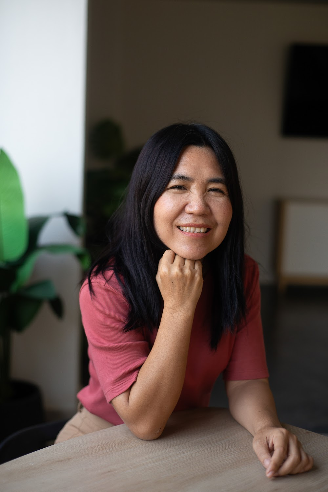
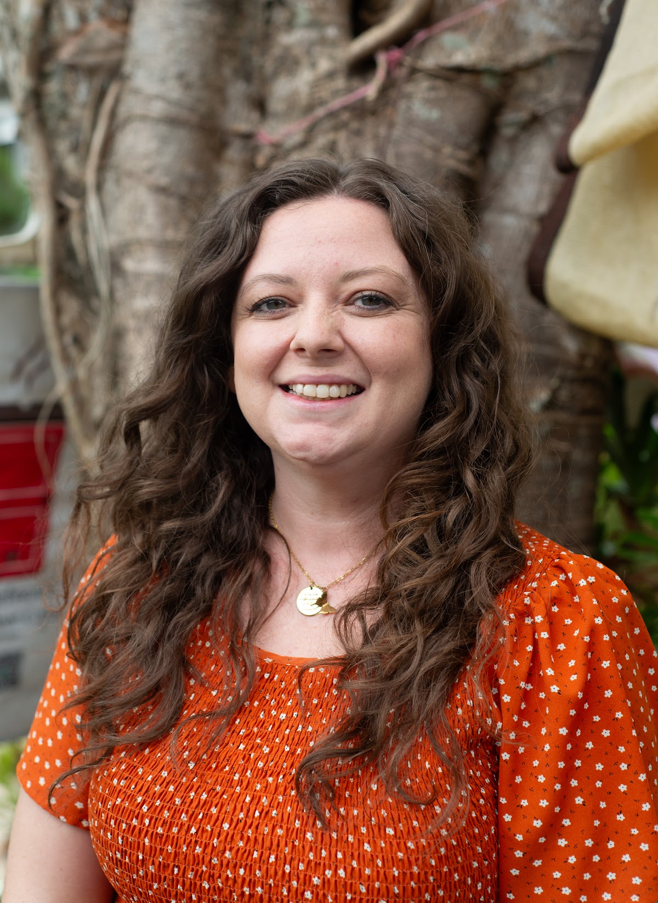
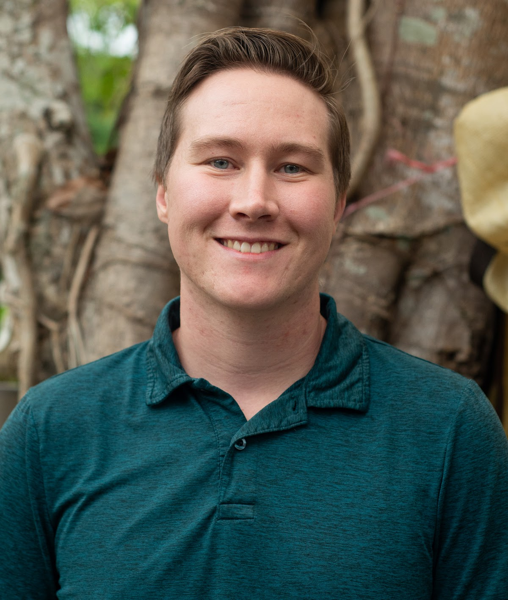
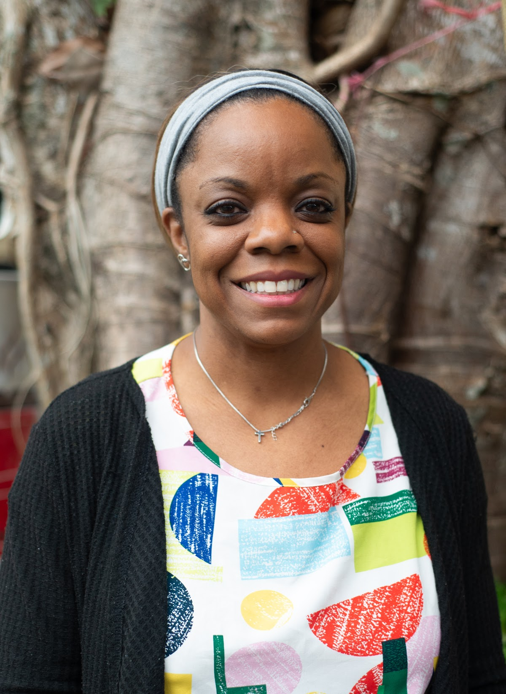

หน้าแรก / ครูของเรา
บุคลากรทีมครูไทยและครูเจ้าของภาษา ที่มาพร้อมคุณวุฒิ ประสบการณ์ และหัวใจที่อุทิศให้เด็ก ๆ

ครูพี่มายด์เป็นเจ้าของและผู้ก่อตั้งโรงเรียนภาษาอังกฤษฮิลท็อป ได้เกียรตินิยมอันดับหนึ่งภาษาอังกฤษจากมหาวิทยาลัยแม่ฟ้าหลวง เริ่มก่อตั้งโรงเรียนนี้ขึ้นมาด้วยความฝันที่อยากจะเห็นเด็กไทยเข้าถึงการศึกษาที่ดีมีคุณภาพในราคาที่จับต้องได้ เพื่อที่เด็ก ๆ จะมีโอกาสและอนาคตที่ดี โดยมีคณะครูและทีมครูชาวต่างชาติที่มีอุดมการณ์เดียวกันมาร่วมงานด้วย
“เด็กนักเรียนไม่ได้ต้องการครูที่สมบูรณ์แบบ เด็กต้องการครูที่ทำให้พวกเขาตื่นเต้นกับการเรียนรู้ ครูที่ยิ้มและทำให้พวกเขามีความสุขในการมาโรงเรียนทุก ๆ วัน”

ครูบริตนี่สำเร็จการศึกษาระดับปริญญาตรี สาขาวิทยาศาสตร์ เอกการศึกษาปฐมวัย และมีใบรับรองการเป็นนักบำบัดโรคดิสเล็กเซีย (ความผิดปกติในการอ่านและการเรียนภาษา) มีประสบการณ์สอนในโรงเรียนที่อเมริกา 6 ปี ก่อนย้ายมาเชียงรายและทำงานที่ฮิลท็อปในตำแหน่งผู้เชี่ยวชาญด้านการอ่าน ครูบริตนี่ยึดหลักการมอบการศึกษาที่เท่าเทียมสำหรับผู้เรียนที่มีวิธีการเรียนรู้แตกต่างกัน
“ความเท่าเทียมไม่ได้หมายความว่าเราทุกคนต้องได้รับสิ่งที่เหมือนกัน แต่คือการได้รับสิ่งที่จำเป็นต่อความสำเร็จของแต่ละคน”

ครูไมเคิลจบปริญญาตรีสาขาประวัติศาสตร์ ปรัชญาและศาสนศาสตร์ จบปริญญาโทสาขาปรัชญา มีประกาศนียบัตร TEFL และตีพิมพ์บทความวิชาการหลายชิ้น ก่อนย้ายมาประเทศไทย ครูไมเคิลเป็นอาจารย์ในมหาวิทยาลัยอาร์คันซอ ประเทศอเมริกา 3 ปี ด้วยความสามารถในการเขียนภาษาอังกฤษ ทำให้ได้ทุนเรียนทั้งปริญญาตรีและโทโดยไม่เสียค่าใช้จ่าย — และตั้งใจส่งต่อโอกาสเหล่านี้ให้ผู้อื่น
“บทบาทสำคัญที่สุดของผู้สอนคือการช่วยให้นักเรียนหาคำตอบที่เป็นเหตุผลด้วยตัวเอง” — Walker Percy

ครูคิมสำเร็จการศึกษาระดับมัธยมปลายในสหรัฐอเมริกา และมีใบรับรองหลักสูตรการอบรมครูเพื่อสอนภาษาอังกฤษ (TEFL) มีประสบการณ์สอนเด็กนานาชาติมาตั้งแต่ปี พ.ศ. 2558 ในหลายประเทศ เช่น ปานามา สเปน และปัจจุบันในประเทศไทย นอกจากนี้ยังเป็นครูโฮมสคูลให้ลูกทั้งสามคน ครูคิมชอบทำให้ห้องเรียนสนุกผ่านกิจกรรมเชิงปฏิบัติ เช่น เกม งานฝีมือ เพลง และเต้น
“บอกฉัน ฉันจะลืม สอนฉัน ฉันจะจำ แต่ถ้าให้ฉันได้ลงมือทำ ฉันจะเรียนรู้” — เบนจามิน แฟรงคลิน
ครูสุดาจบการศึกษาปริญญาตรีสาขาการจัดการธุรกิจ และมีประกาศนียบัตรการสอนภาษาอังกฤษสำหรับผู้เรียนภาษาอังกฤษเป็นภาษาที่สอง มีประสบการณ์สอนภาษาอังกฤษให้เด็กเป็นเวลา 4 ปี
“ฉันรักเด็ก และรักที่จะสอนเด็ก ฉันเชื่อว่าฉันสามารถเปลี่ยนแปลงชีวิตของเด็กเหล่านั้นได้ ให้พวกเขามีพลังเชิงบวก และสามารถรับมือกับโลกใบใหญ่ข้างนอกได้”